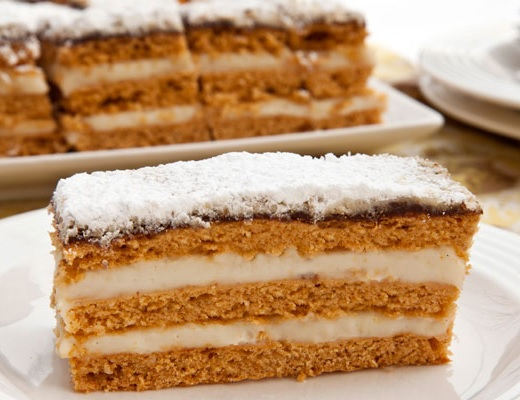

Descriere
Prajitura cu foi de zahăr ars și cremă de vanilie se face foarte ușor, doar că are nevoie de minim 24 ore pentru ca foile să se frăgezească Pentru a pregăti foile de zahăr ars trebuie să ardeți zahărul cât să fie maro frumos, aramiu - nu il lăsați să devină maro închis, spre negru căci este amar și prăjitura nu va fi bună
Ingrediente
| Compoziția pentru | Ingredient | Cantitate | Unitatea de masura |
|---|---|---|---|
| Foi de zahăr ars | zahăr | 80 | grame |
| Foi de zahăr ars | zahăr pentru caramel | 80 | grame |
| Foi de zahăr ars | apă | 60 | mililitri |
| Foi de zahăr ars | apă | 2 | linguri |
| Foi de zahăr ars | zahăr vanilat | 1 | plic |
| Foi de zahăr ars | ouă | 2 | bucăți |
| Foi de zahăr ars | ulei | 0.1 | litri |
| Foi de zahăr ars | praf de copt | 1 | linguriță |
| Foi de zahăr ars | smântână | 1 | lingură cu vârf |
| Foi de zahăr ars | făină | 500 | grame |
| Crema de vanilie | lapte | 0.75 | litri |
| Crema de vanilie | zahăr | 250 | grame |
| Crema de vanilie | unt | 300 | grame |
| Crema de vanilie | faină | 7 | linguri |
| Crema de vanilie | vanilie | 1 | păstaie |
| Topping | ciocolata cu lapte topinta la baine-marie | 100 | grame |
| Topping | lapte | 2 | linguri |
| Topping | ulei | 1 | lingură |
| Topping | nuca măcinată | 4 | linguri |
| Topping | zahăr pudră | după preferină | grame |
Mod de preparare:
-
Punem 80 g zahăr și 2 linguri de apă într-o cratiță, la foc mic până zahărul se caramelizează. Stingem cu 60 ml apă și lăsăm pe foc mic până se topește caramelul, apoi lăsăm acest sirop să se răceasc.
Mixăm cele 2 ouă împreună cu 80 g zahăr și un plic de zahăr vanilat. Adăugăm pe rând uleiul, siropul de caramel și treptat făina amestecată cu praful de copt. Între etapele în care punem făina, adăugăm și smantâna.
Întindem 3 foi cu dimenisuni de aproximativ 22*33cm2. Le punem pe o hârtie de copt și le coacem în cuptorul preîncălzit la 180°C în jur de 10 minute. -
Punem la fiert jumătate din cantitatea de lapte, zahărul și semințele dintr-o păstaie de vanilie. Când începe să se încălzească adăugăm și restul de lapte în care am dizolvat făina.
Lăsăm să fiarbă până se îngroasă compoziția, apoi luăm de pe foc și lăsăm să se răcească. Când este doar puțin călduța compoziția, adăugăm untul și mixăm bine. Lăsăm apoi crema la rece cateva ore. - Punem ciocolata la topit la baine-marie impreuna cu 2 linguri de lapte. Ungem foile cu cremă de vanilie având grijă ca pe ultima să întindem un strat de ciocolată topită și amestecată cu o lingură de ulei.
- Punem puțină nucă măcinată peste aceasta, cât este încă caldă. Înainte să servim, tapetam cu zahăr pudră după bunul plac.